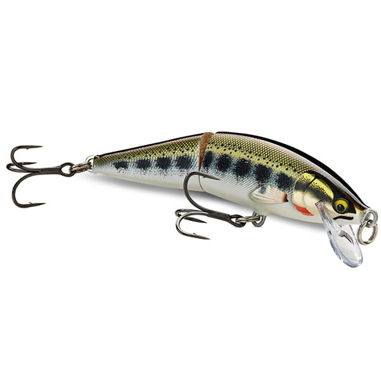
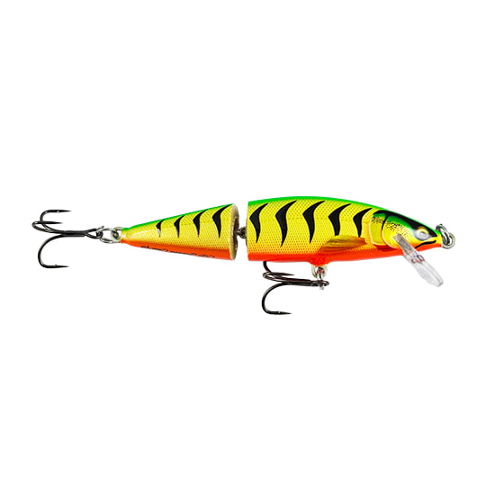
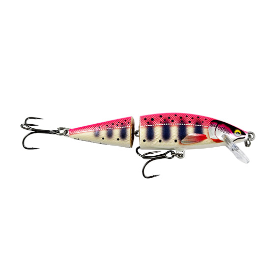
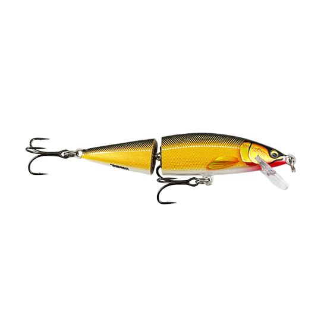
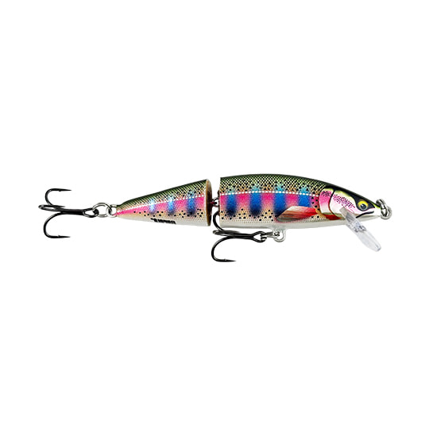
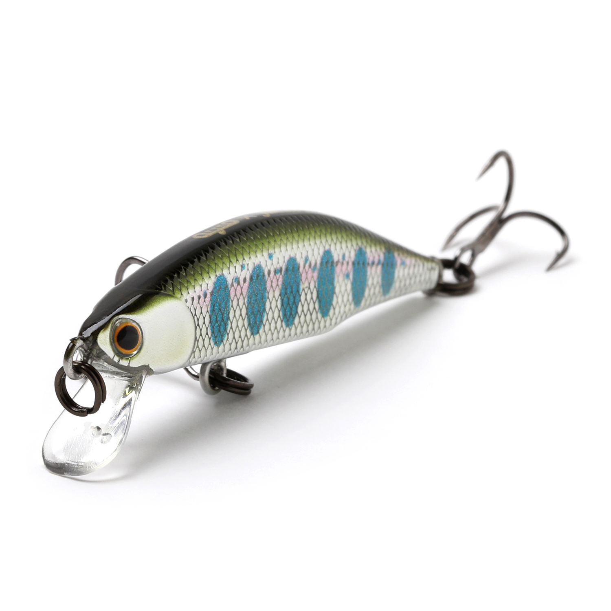
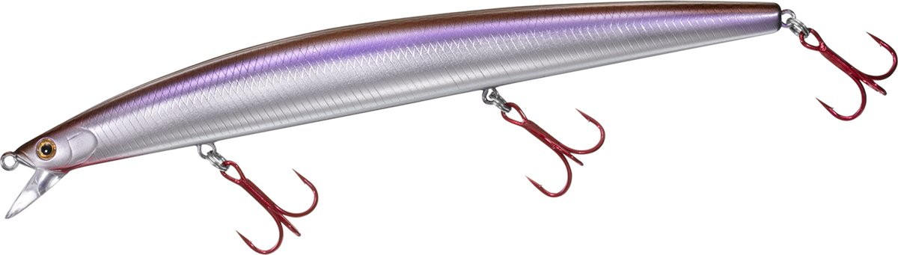

カウントダウン ジョインテッドエリート95
（COUNTDOWN JOINTED ELITE 95）
カウントダウン ジョインテッドエリート95は、ラパラの「カウントダウンエリート」シリーズに新しく登場したジョイントミノーです。使い心地のよさと幅広い汎用性に定評のあるエリートシリーズを、ジョイントボディにしました。
タイトピッチなウォブンロールで、低速から高速まで幅広いリトリーブスピードに対応するのが最大の特徴です。

画像出典:ラパラ公式HP
スペック
- メーカー
- Rapala（ラパラ）
- タイプ
- シンキング（バルサ・ジョイントミノー）
- 全長
- 95mm
- 重さ
- 12g
- 潜行深度
- 1.5m
- カラー
- 全14色
- ターゲット
- トラウト・バス・シーバスなど
▼今すぐチェック

カウントダウン ジョインテッドエリート95の特徴
カウントダウンエリートのジョイント新登場
-
タイトピッチなウォブンロール
ジョイントボディで、タイトピッチなウォブンロールアクションを出す。低速から高速まで、幅広いリトリーブスピードで泳ぐ。
-
頭下がりで沈む
頭下がりの姿勢で沈むように作られていて、カウントダウンで狙ったレンジまで沈めやすい。
-
低重心・フラットサイドで飛ぶ
低重心構造とフラットサイドボディで、飛行姿勢が安定して抜群の飛距離を出す。
カウントダウン ジョインテッドエリート95の使い方
基本は、着水したらカウントダウンで狙いのレンジまで沈めて、一定のスピードで巻くことです。カウントの数をそろえると、同じレンジを繰り返し通せます。
ジョイントボディなので、ゆっくり巻いても生命感のある動きが出ます。反応がない時は、巻くスピードを変えたり、軽くトゥイッチを入れたりして変化をつけましょう。
カウントダウン ジョインテッドエリート95の得意な状況
流れのある渓流や本流、湖のトラウト、バスに加えて、河川や港湾のシーバスにもよく効きます。ミノーで探りたい場所で幅広く使えます。
沈めてレンジを探りながら、ジョイントの生命感で食わせられるのが強み。スピードを選ばないので、その日の状況に合わせやすく、よく釣れるミノーです。
ワンポイント
流れのある場所では、アップクロスに投げて、流れより少し速いくらいのスピードで巻くと、ジョイントのウォブンロールがしっかり出て、流れの中でもレンジを保てます。
人気カラー
カウントダウン ジョインテッドエリート95の人気カラーを紹介します。

ギルディッドファイアタイガー派手なアピール系。濁りがある時に。

ピンクヤマメヤマメ柄のナチュラル系。渓流に。

ギルディッドゴールドシャッド金のフラッシングで、朝夕や曇りの日に。

ギルディッドレインボートラウトニジマス柄。大型トラウト狙いに。
※全14色。
画像出典:ラパラ公式HP
▼今すぐチェック
カウントダウン ジョインテッドエリート95に似ているルアー
-

メテオーラ ジャクソン 詳細はこちら＞トラウト用のミノー。渓流で比べたい時に。
-
 フランジャー
ボトムアップ
詳細はこちら＞
フランジャー
ボトムアップ
詳細はこちら＞
バス用のジャークベイト。
-

ショアラインシャイナーSL ダイワ 詳細はこちら＞海サクラ用のシンキングミノー。